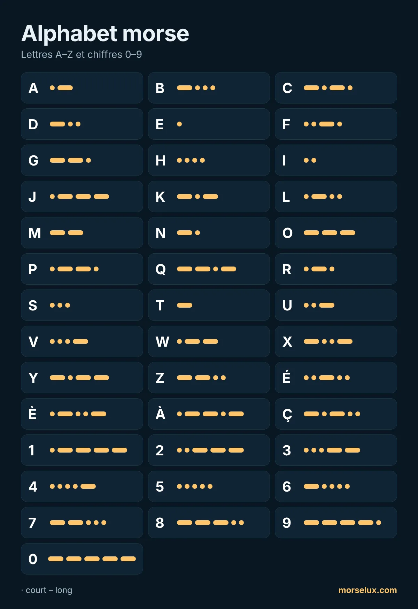

- Écoutez, ne comptez pas. À vitesse réelle, on ne peut pas compter les points et les traits ; chaque lettre est un motif sonore.
- Les contraires aident : A (·–) et N (–·), D (–··) et U (··–), G (––·) et W (·––) sont en miroir.
- Travaillez en séances courtes. Dix à quinze minutes par jour valent mieux qu'une longue séance par semaine.
- Servez-vous-en. Tapez un mot dans le traducteur morse et essayez d'entendre les lettres avant de les lire.
MorseLux › Alphabet
·–·· ··– –··– Tableau · touchez pour écouter
Alphabet morse
Toutes les lettres, tous les chiffres et les signes de ponctuation du code morse international. Touchez un signe pour entendre comment il sonne – c'est ainsi qu'on apprend vraiment le morse.
Lettres A–Z
Les chiffres en morse (0–9)
Les chiffres ont toujours cinq signaux, ce qui les rend faciles à retenir : de 1 à 5 ils commencent par des points, de 6 à 0 par des traits.

Signes de ponctuation
| Signe | Morse | Écouter |
|---|---|---|
| . | ·–·–·– | |
| , | ––··–– | |
| ? | ··––·· | |
| ' | ·––––· | |
| ! | –·–·–– | |
| / | –··–· | |
| ( | –·––· | |
| ) | –·––·– | |
| & | ·–··· | |
| : | –––··· | |
| ; | –·–·–· | |
| = | –···– | |
| + | ·–·–· | |
| - | –····– | |
| _ | ··––·– | |
| " | ·–··–· | |
| $ | ···–··– | |
| @ | ·––·–· |
Lettres spéciales (É, È, À, Ç…)
Ces lettres font partie du code morse étendu utilisé dans certaines langues. É, È, À et Ç ont leur propre signe ; les autres lettres accentuées (Ê, Î, Ô, Ù…) s'envoient comme la lettre simple, sans accent.
| Signe | Morse | Écouter |
|---|---|---|
| Ä | ·–·– | |
| Ö | –––· | |
| Ü | ··–– | |
| ß | ···––·· | |
| Ñ | ––·–– | |
| É | ··–·· | |
| À | ·––·– | |
| È | ·–··– | |
| Ç | –·–·· | |
| Ğ | ––·–· | |
| Ş | ·––·· |
Conseils pour apprendre l'alphabet
Questions fréquentes
Combien de signes compte l'alphabet morse ?
Le code morse international a des signes pour les 26 lettres A–Z, les dix chiffres 0–9 et les signes de ponctuation les plus courants. Certaines langues ajoutent leurs propres lettres, comme É ou Ç.
Comment écrit-on les lettres accentuées en morse ?
É (··–··), È (·–··–), À (·––·–) et Ç (–·–··) ont un signe à eux. Les autres, comme Ê, Î ou Ù, s'envoient en général sans accent : E, I, U.
Peut-on imprimer l'alphabet morse ?
Oui. Utilisez le bouton « Télécharger le PDF » en haut de la page : c'est une feuille A4 claire, pratique pour la classe ou le groupe scout.
Quelle est la lettre la plus courte et la plus longue ?
Les plus courtes sont E (·) et T (–). Parmi les lettres, les plus longues ont quatre signaux, comme Q (––·–) et Y (–·––) ; les chiffres en ont toujours cinq.